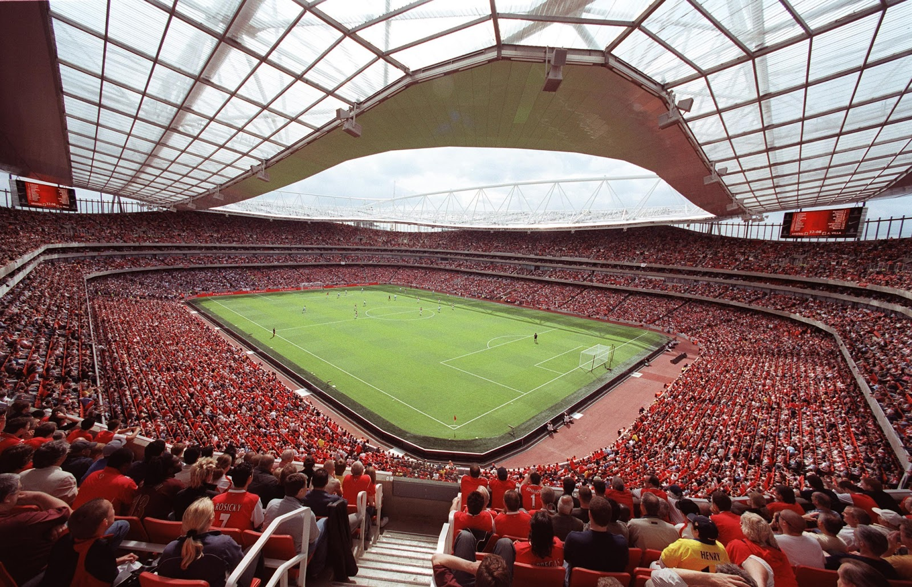

The iconic north London venue offers everything you need for an extraordinary event or great day out with the benefit of some of the best panoramic views of London. There are lots of fun things, such as an ice rink, a skate park, Go-Ape and a boating lake. However, the main attraction is the wide array of organised events held at the palace.

Camden Passage is world famous for its Antique and Contemporary Shops, markets and arcades. Originally one of London's leading antique locations, the Passage has now diversified and has shops, restaurants, cafes and markets.

The Emirates Stadium is a large football stadium owned by the Arsenal team. It was built due to increasing demand at their Highbury stadium, but has become a popular attraction of its own. If you are a fan of football, this is the attraction for you!